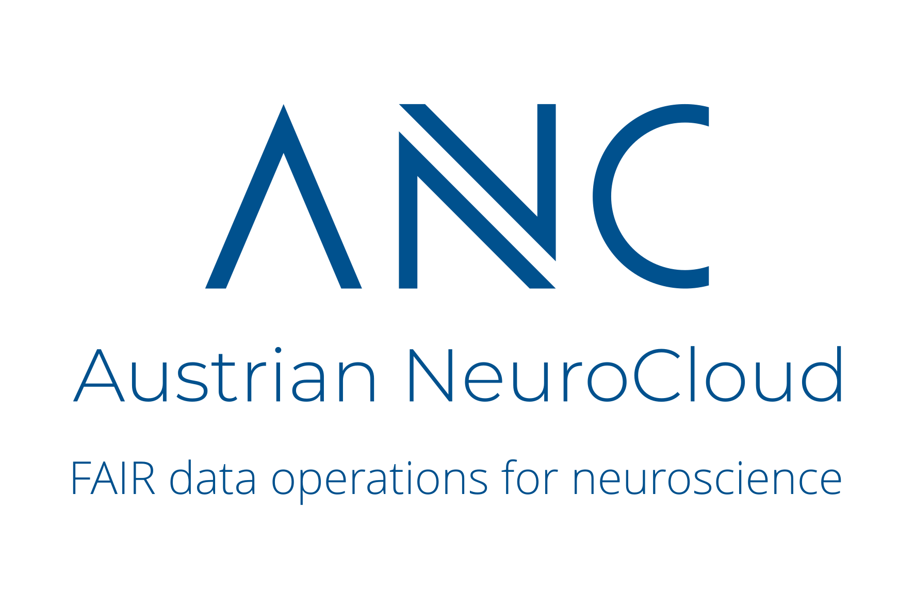
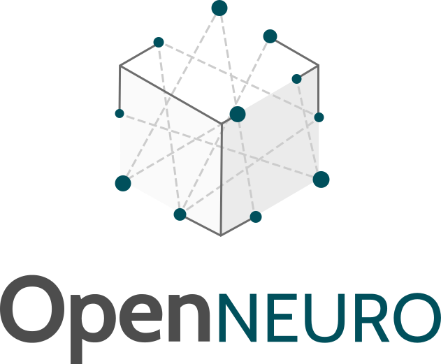

Neurobagel
An open ecosystem for participant data discovery across decentralized neuroscience datasets
Intuitive tools for harmonizing your neuroscience datasets using community standards and making them discoverable to external researchers, without uploading or sharing raw data.
Need to create a data dictionary for messy tabular data?
Describe variables and values in your data tables using a harmonized data model, completely locally and in the browser.
Looking for data for your study?
Run a federated query to create your own cross-dataset participant cohort based on clinical-demographic and imaging parameters.
Host your own Neurobagel node!
Deploy a Neurobagel node at your institute to make your local datasets discoverable.
With our ready-to-run production deployment recipes,
simply run docker compose up,
and you're in business.
bash
Why choose Neurobagel?
Share data without moving it
Set your own data access/visibility rules
Minimal setup, intuitive tools
Hands-on support
Built by and for researchers
Interoperable through open standards
Adoption




About us
Neurobagel is a collaborative effort based in the ORIGAMI Lab, Montreal Neurological Institute.
Learn more about our core team here.